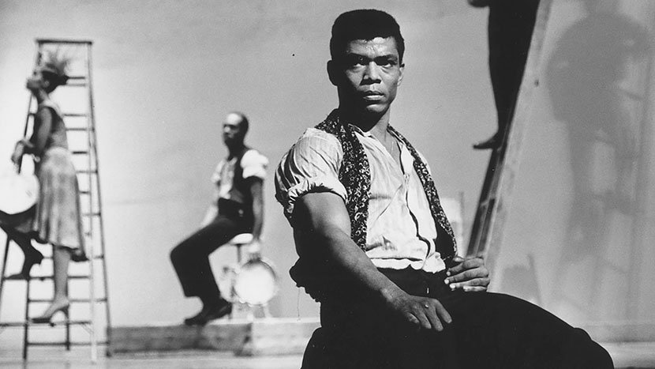
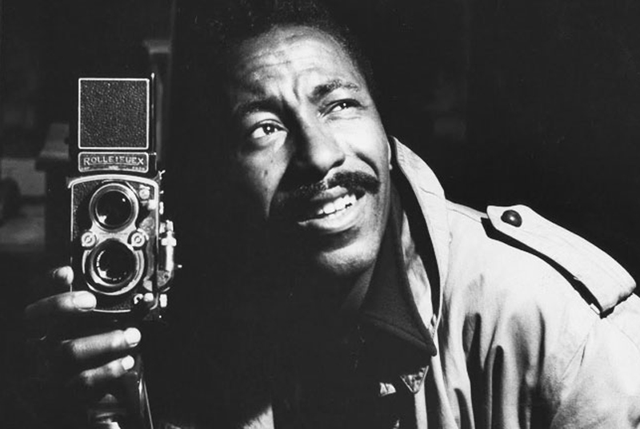
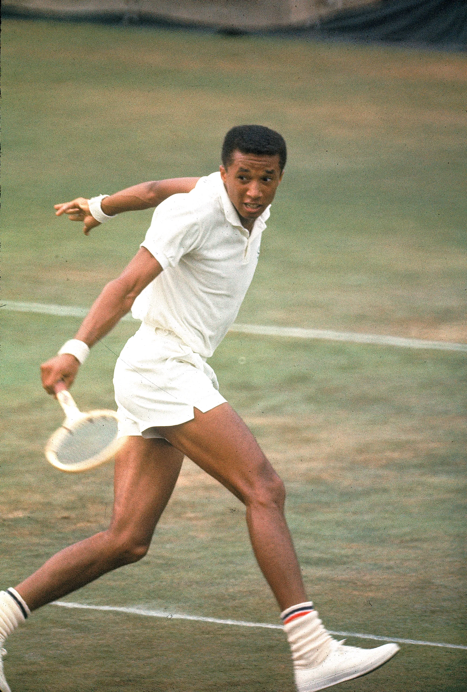

George Wasington Carver was a agricultural scientist and an inventor. Craver was born into slavery. He had left home at such a young age to pursue education. Then later on he had gotten his master degree in agricultural science.
|  | Alvin Ailey was known for being one of the most important choreographers in the history of morden dance. |
|  | Gordon Parks was known for focusing on issues of civil rights. Also on proverty and race relations |
|  | Auther ashe was a professional tennis player and civil rights activist. |